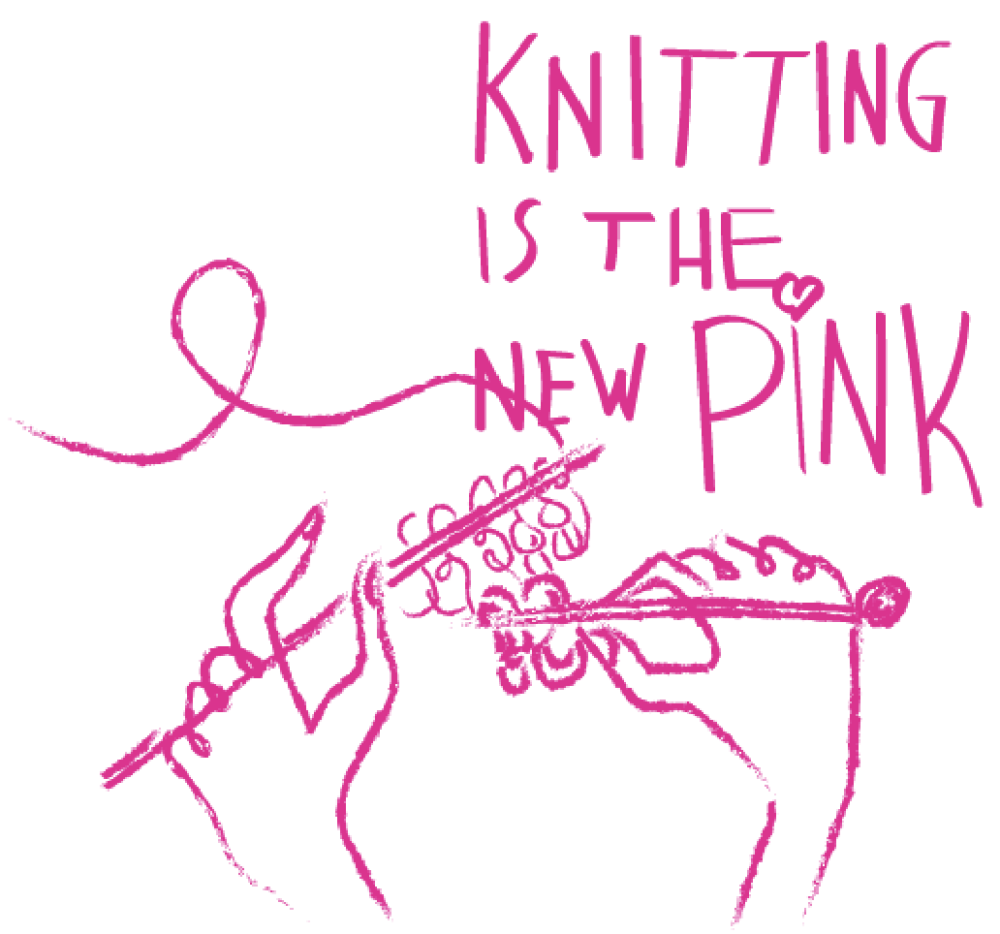

Knitting is the new PINK
Støt brysterne X ELLE Danmark
Støt Brysterne præsenterer i samarbejde med ELLE det store nye event
“Knitting is the new pink”.
Kom og vær med til en dejlig dag fuld af fællesskab, hygge, hækling og strikning.
Om du er ung, gammel eller slet ikke kan strikke, er du velkommen.
Vi præsenterer kendte ansigter, der alle har en tilknytning til
kræft eller strikke og hækle universet.
Du vil blive klogere på både hvad brystkræft er og hvad du støtter op om. Du vil kunne dele dine
erfaringer og få erfaringer inden for strikning. Få nye bekendtskaber
inden for strikke samfundet.
